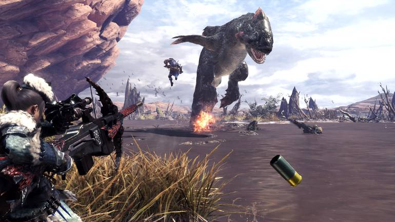
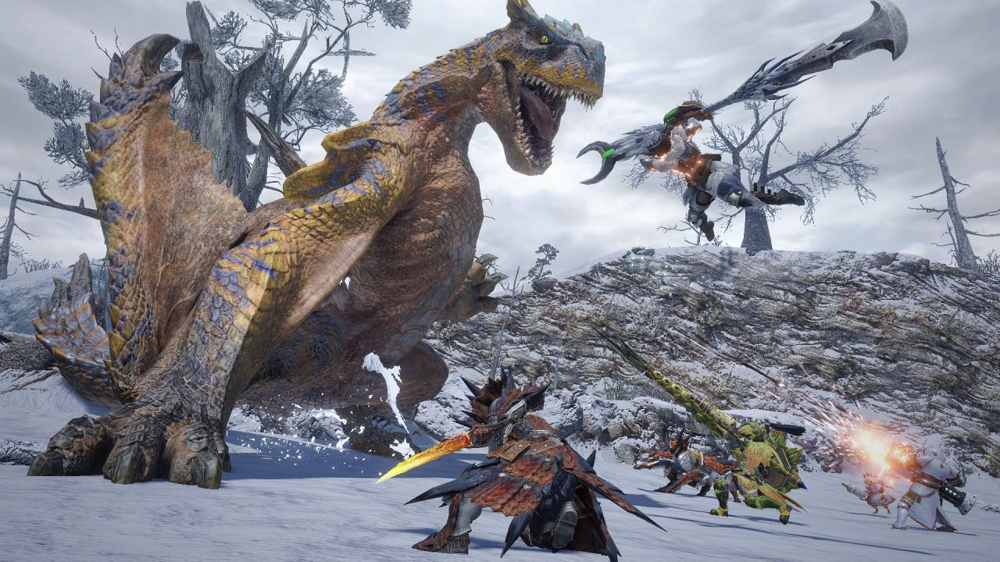
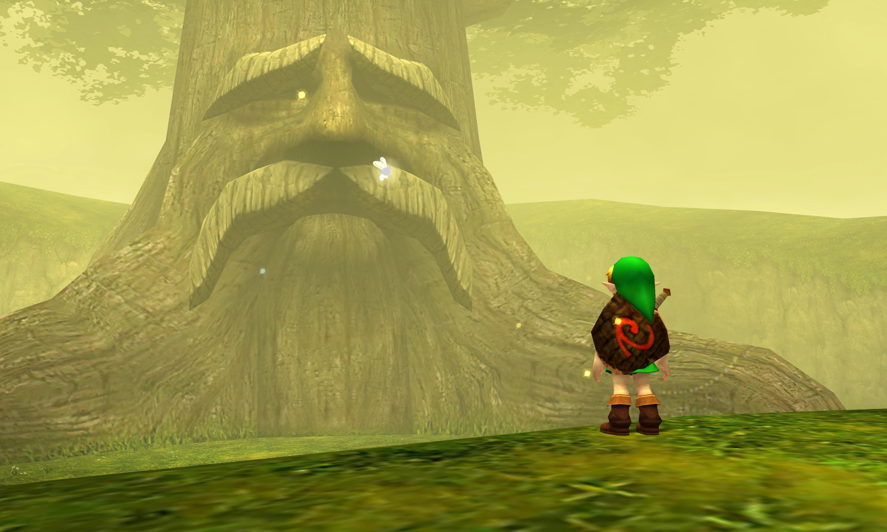

Monster Hunter World
Monster Hunter World é uma obra de arte. Com várias horas de gameplay e gráficos incríveis, é uma experiência que todos deveria experimentar, no meu save principal eu tenho mais de 400 horas e não platinei o jogo.
Monster Hunter Rise
Monster Hunter Rise é o jogo de switch que veio logo após o World, ele tem uma gameplay bem mais rápida que o World, porém os gráficos são bem piores, eu em particular prefiro o World por conta da claw e óbivo, os gráficos tbm. O quarto que vc tem no World tbm é bem maior e completo que o do Rise. No entanto, ambos são ótimos jogos e o Rise é bem fiel aos antigos jogos da franquia enquanto o World é um pouco fora da curva, no quesito HUD. Minha recomendação se quiser jogar um dos dois, é o World.

Elden Ring
Elden Ring é um jogo muito bom de se jogar com amigos, desafiador, e MUITO mal otimizado no pc. Com certeza pode render varias horas de gameplay, o seu ponto negativo é ser distribuido pela BANDAI o que deixa o jogo ridiculamente caro. O que me encantou no Elden Ring foi o seu grande e livre mapa pra ser explorado, mesmo na sua primeira hora você consegue explorar grande parte do mapa e se equipar antes de enfrentar o primeiro boss.
Zelda Ocarina Of Time
E aqui está um clássico, um jogo de 1998 que me encantou com suas incríveis músicas e histórias. Ocarina Of Time é um clássico que deveria ser jogado por todos os gamers, infelizmente minha experiência foi com um emulador e não com 64 ou um 3DS, caso um dia eu tenha a oportunidade, concerteza compraria o jogo de forma original. Ele está em último nessa lista, mas em meu coração, ele tem o seu próprio lugar e pode muito bem ser o meu favorito.